Model Architecture Reference
This page documents every model architecture developed in the experimentation pipeline, from the first baseline proof-of-concept through to the current SOTA production model. All architectures operate on the same core problem: given a sliding window of RF measurements across a candidate cell set, predict the optimal target cell for a handover 5 steps into the future.
Production model:
models/best_ray_id_crossformer.keras
Problem type (production): 5-step future horizon multi-class cell selection
Problem type (baseline only): Single-step (current-instant) selection —notebooks/modeling/01_temporal_deepset.ipynbonly
Architecture Lineage Overview
Exp 01 — Temporal DeepSet (baseline, single-step)
│
├─► Exp 02 — SpatioTemporal DeepSet Production (5-step, multi-horizon)
│
├─► Exp 03 — MTL Set Transformer (multi-task, 5-step)
│
├─► Exp 04 — 6G Predictive Set Transformer (Optuna-tuned, 5-step)
│
├─► Exp 05 — Strategic DeepSet (context injection, 5-step)
│
├─► Exp 06 — SOTA Ray-Tracing Fine-Tune (MTL backbone → ray domain)
│
└─► Exp 07 — Ray-ID CrossFormer ★ SOTA / Production (5-step)
Exp 01 — Temporal DeepSet (Baseline)
Notebook:
notebooks/modeling/01_temporal_deepset.ipynb
Checkpoint:models/best_temporal_deepset.keras
⚠️ Important: This is a single-step (current-instant) cell selection experiment — it predicts the best cell at time t, not a future horizon. All subsequent experiments (02–07) target 5-step future prediction for production use.
Architecture
The Temporal DeepSet stacks a per-cell LSTM temporal encoder with a DeepSet permutation-invariant aggregation, making it robust to variable numbers of neighbor cells and to the arbitrary ordering of the candidate set.
Input: (K, T, F) — K cells, T=25 timesteps, F=3 features (RSRP, SINR, Load)
│
├─ [Per-Cell LSTM] (shared weights across K) → φ(xᵢ) ∈ ℝ^64
│
├─ [MaskedGlobalAveragePooling] → ρ-aggregation over valid cells
│
└─ [Classifier MLP] → logits ∈ ℝ^K
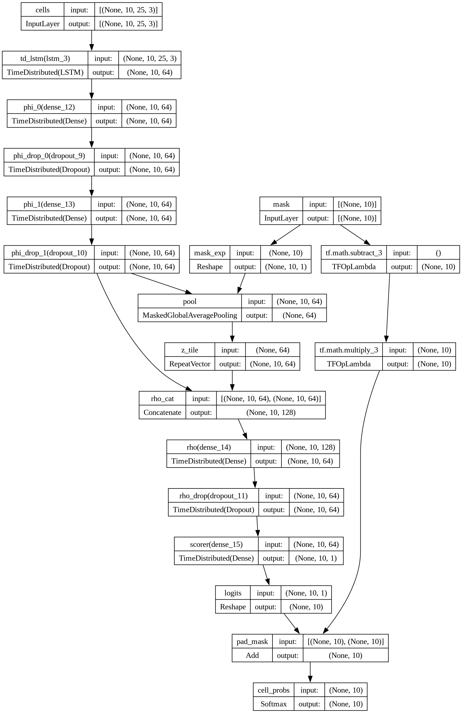
Hyperparameters
Parameter |
Value |
|---|---|
|
25 |
|
10 |
|
64 |
|
64 |
|
2 |
|
0.25 |
|
128 |
|
1e-3 |
Loss |
Focal (γ=2.0, α=0.25) + Label Smoothing 0.1 |
Results (Single-Step — Baseline Only)
Metric |
Value |
|---|---|
Test Top-1 |
99.82 % |
Test Top-3 |
100.0 % |
Test Top-5 |
100.0 % |
These near-perfect numbers reflect the single-step nature of this experiment: the model selects the best current cell, which is an easier problem. This is not the 5-step production task.
Training Curves
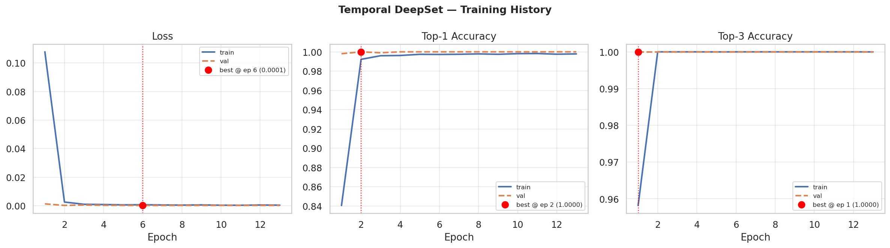
Confusion Matrix
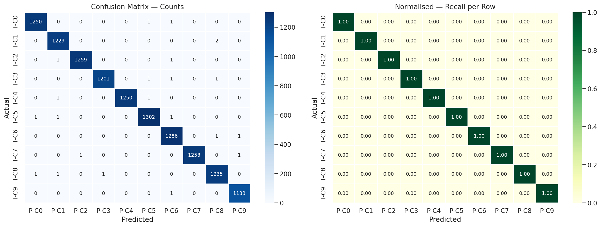
Exp 02 — SpatioTemporal DeepSet Production
Notebook:
notebooks/modeling/02_temporal_deepset_production.ipynb
Architecture class:SpatioTemporalDeepSet
Checkpoint:models/best_temporal_deepset.keras
This version extends the baseline to the 5-step future-horizon prediction problem. A multi-task decoder simultaneously predicts:
the optimal cell at the current instant (auxiliary task, easy),
the optimal cell at each of the next 5 steps (primary task),
future RSRP / SINR / Load signal regression (auxiliary regression head).
Input: (K, T=200, F=5)
│
├─ [Per-Cell LSTM (128 units)] → cell embedding φᵢ ∈ ℝ^64
│
├─ [Attend module] → context-aware aggregation ρ ∈ ℝ^128
│
├─ [Now-Decoder MLP] → cell_now logits ∈ ℝ^K (auxiliary)
│
├─ [Future-Decoder LSTM (256)] → hidden per horizon
│ └─ [Scorer] → logits ∈ ℝ^(H×K) (primary, H=5)
│
└─ [Signal Regression Head] → (RSRP, SINR, Load) × H (auxiliary)
Results (5-Step Future Prediction)
Horizon |
Top-1 |
|---|---|
t+1 |
64.98 % |
t+2 |
57.94 % |
t+3 |
54.26 % |
t+4 |
52.29 % |
t+5 |
51.20 % |
avg |
56.13 % |
Metric |
Value |
|---|---|
RSRP MAE |
5.56 dBm |
SINR MAE |
5.14 dB |
Load MAE |
0.072 |
Training Curves
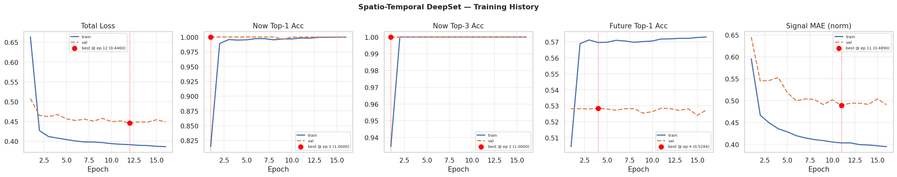
Per-Step Future Accuracy
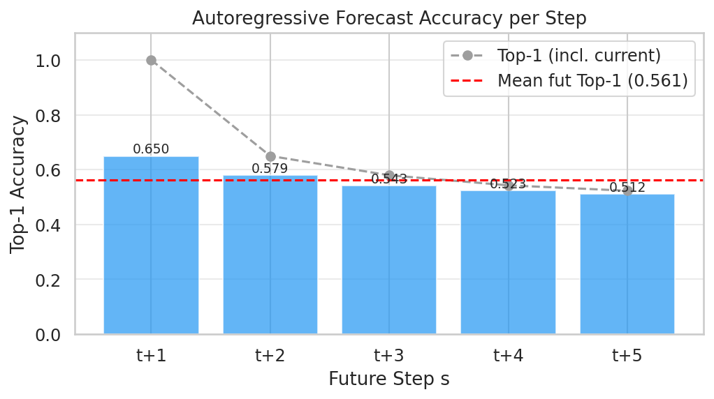
Exp 03 — MTL Set Transformer
Notebook:
notebooks/modeling/03_mtl_transformer.ipynb
Checkpoint:models/best_mtl_transformer.keras
Loss:1.0 × Focal(γ=2.0, α=0.25) + 0.5 × MSE
The MTL Set Transformer replaces the DeepSet ρ-aggregation with a full multi-head self-attention block over the cell axis. This enables richer cross-cell interaction modeling before the final classification head.
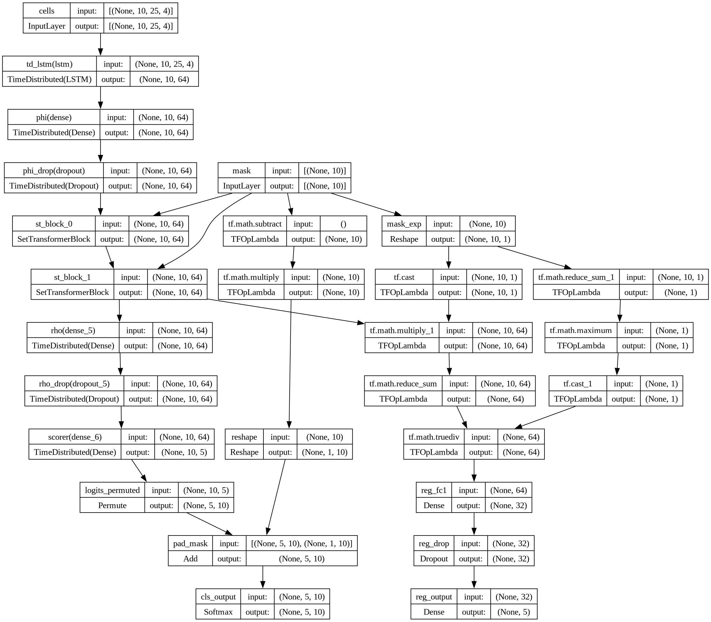
Input: (K, T=25, F=4) [RSRP, SINR, Load + zero-anchor flag]
│
├─ [Per-Cell LSTM (64)] → φᵢ ∈ ℝ^64
│
├─ [Set Transformer Block × 2]
│ ├─ Multi-Head Self-Attention (4 heads, key_dim=16)
│ └─ Feed-Forward (FF_DIM=128)
│
├─ [Cell Classifier Head] → logits ∈ ℝ^K (5-step)
│
└─ [RSRP Regression Head] → predicted RSRP per horizon
Results
Metric |
Value |
|---|---|
Test Top-1 |
55.79 % |
Test Top-3 |
86.02 % |
Test Top-5 |
94.99 % |
RSRP MAE |
4.20 dBm |
Training Curves
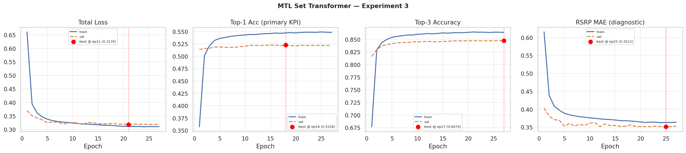
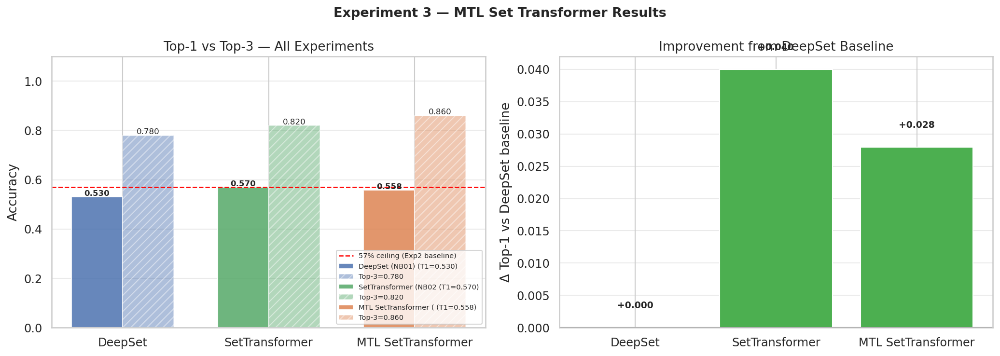
Exp 04 — 6G Predictive Set Transformer
Notebook:
notebooks/modeling/04_6g_predictive.ipynb
Checkpoint:models/best_6g_predictive.keras
Tuning: Optuna hyperparameter search
This experiment applies automated Optuna-based hyperparameter optimization over the Set Transformer family, extending the observation window to 200 timesteps to capture long-range temporal dependencies.
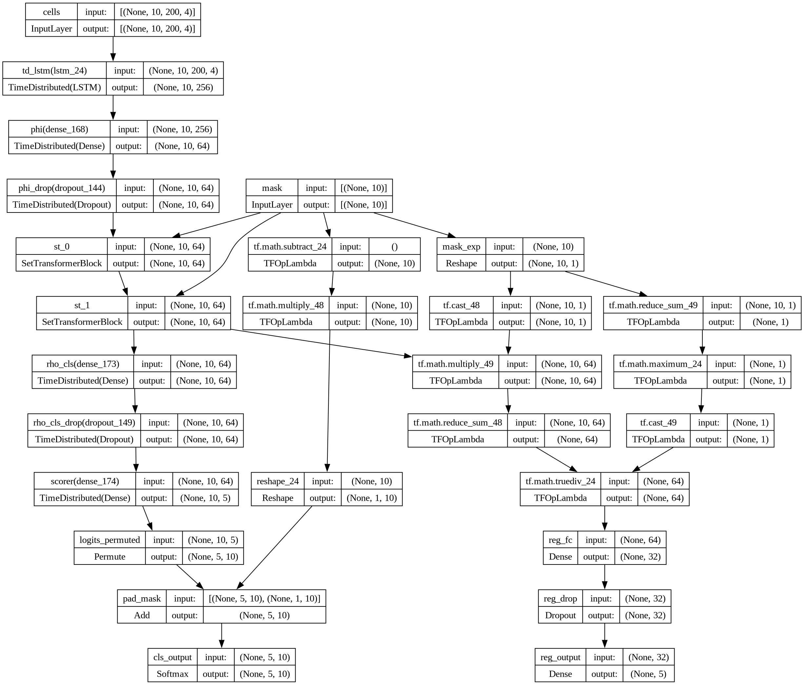
Hyperparameters (Optuna Best)
Parameter |
Value |
|---|---|
|
200 |
|
256 |
|
2 |
|
2 |
|
128 |
|
0.378 |
|
1.68e-3 |
|
1.0 |
|
0.7 |
Results
Metric |
Value |
|---|---|
Test Top-1 |
54.93 % |
Test Top-3 |
85.47 % |
Test Top-5 |
94.70 % |
RSRP MAE |
5.23 dBm |
Training Curves
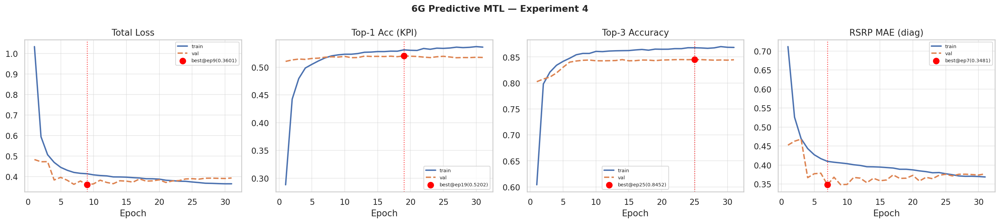
Confusion Matrix
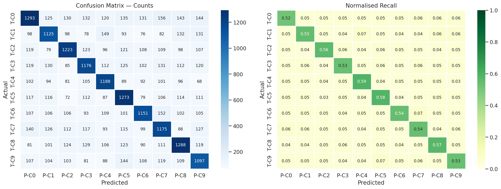
Comparison Plot
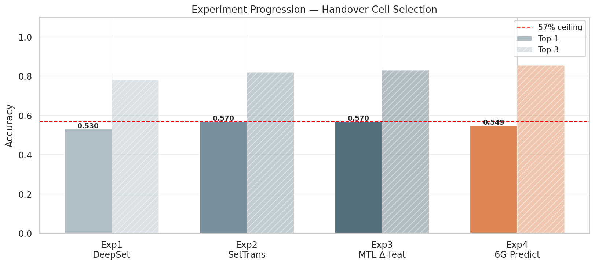
Exp 05 — Strategic DeepSet (Context Injection)
Notebook:
notebooks/modeling/05_strategic_deepset.ipynb
Checkpoint:models/models_deprecated/best_strategic_deepset.keras
Loss:1.0 × Focal(γ=2.0) + 0.5 × Huber
This experiment injects global contextual state (UE speed, direction cosines, cell load, and one-hot handover class) into the DeepSet aggregation via concatenation. The goal is to make the model context-aware of mobility regime and network state beyond just the RF signal values.
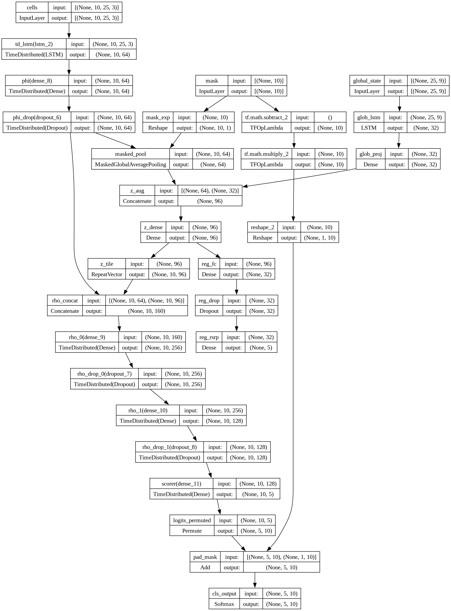
Global Context G = [speed, dir_cos, dir_sin, cell_load, ho_class_onehot] ∈ ℝ^9
│
├─ [Global LSTM (32)] → global embedding gₜ ∈ ℝ^32
│
├─ [Per-Cell LSTM (64)] → φᵢ ∈ ℝ^64
│
├─ [Concat: φᵢ ‖ gₜ] → enriched cell embedding
│
├─ [RHO MLP (256 → 128)] → aggregated representation
│
├─ [Classifier] → logits ∈ ℝ^K
│
└─ [RSRP Regression Head]
Results
Metric |
Value |
|---|---|
Test Top-1 |
51.35 % |
Test Top-3 |
86.68 % |
Test Top-5 |
95.59 % |
RSRP MAE |
4.94 dBm |
Training Curves
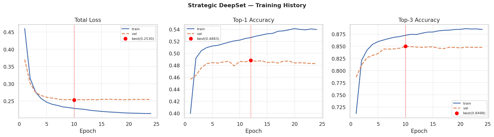
Exp 06 — SOTA Ray-Tracing Fine-Tune
Notebook:
notebooks/modeling/06_sota_ray_tracing_finetuning.ipynb
Source model:models/best_mtl_transformer.keras
Fine-tuned checkpoint:models/best_sota_ray_finetuned.keras
This experiment adapts the best hexagonal-data model (MTL Transformer) to the high-fidelity ray-tracing domain using a progressive unfreezing fine-tuning strategy:
Phase 1 — Head-only (25 epochs, LR=1e-4): freeze encoder, train classifier head only.
Phase 2 — Upper layers (25 epochs, LR=5e-5): unfreeze upper transformer blocks.
Phase 3 — Full model (15 epochs, LR=1e-6): end-to-end fine-tuning.
Base Model (MTL Transformer, frozen encoder)
│
Phase 1: train Head only
Phase 2: unfreeze upper blocks
Phase 3: full end-to-end
│
→ Fine-tuned for ray-tracing domain
Results on Ray-Tracing Test Split
Stage |
Top-1 |
Top-3 |
Top-5 |
RSRP MAE |
|---|---|---|---|---|
Baseline (no FT) |
21.4 % |
63.8 % |
98.3 % |
8.55 dBm |
Fine-tuned |
28.1 % |
72.5 % |
98.6 % |
8.11 dBm |
Training Curves
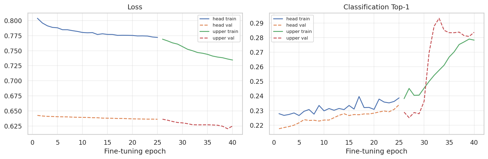
Confusion Matrix
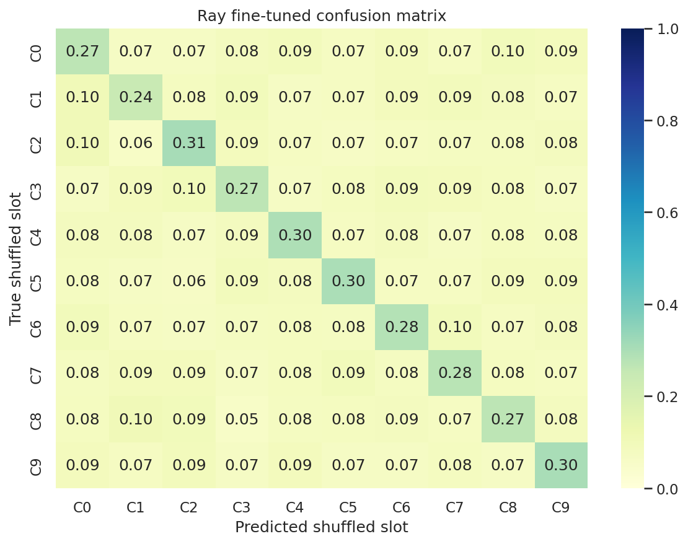
Occlusion Example
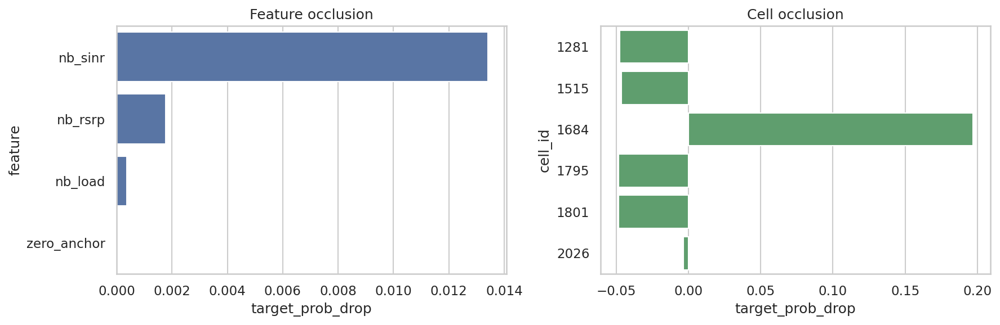
Exp 07 — Ray-ID CrossFormer ★ SOTA / Production
Notebook:
notebooks/modeling/07_ray_id_crossformer.ipynb
Production checkpoint:models/best_ray_id_crossformer.keras
Deployment target: NR edge server (MEC)
The Ray-ID CrossFormer is the state-of-the-art production model. It combines:
Temporal RF encoding via GRU (per-cell, shared weights),
Cell identity embeddings (learned from integer cell IDs, vocabulary size = 172),
Serving-cell flag embedding (binary: is this cell the current serving cell?),
Masked intra-cell self-attention (attend over the candidate set),
Horizon cross-attention (cross-attend over the 5 future prediction horizons).
Input:
├─ RF features (K, T=25, 3) [RSRP, SINR, Load]
├─ Cell IDs (K,) integer cell identifiers
└─ Serving flag (K,) binary serving-cell indicator
Per-Cell Temporal Encoder:
[GRU (96 units, shared weights)] → hᵢ ∈ ℝ^96
Cell Identity Embedding:
[Embedding(vocab=172, ID_DIM=32)] → eᵢ ∈ ℝ^32
Serving Embedding:
[Embedding(2, 8)] → sᵢ ∈ ℝ^8
Fusion:
[Dense(D_MODEL=128)] ← concat(hᵢ, eᵢ, sᵢ)
Intra-Cell Self-Attention:
[Multi-Head Self-Attention × 3 blocks, 4 heads, FF=256] (masked for padding)
Horizon Cross-Attention:
[Learnable horizon query vectors Q ∈ ℝ^(H×D)]
[Cross-Attention over cell keys/values]
→ per-horizon logits ∈ ℝ^(H×K)
Output:
Softmax probabilities per horizon per cell → shape (H=5, K)
Hyperparameters
Parameter |
Value |
|---|---|
|
128 |
|
32 |
|
96 |
|
4 |
|
256 |
|
3 |
|
0.18 |
|
1.5 |
|
0.75 |
|
0.01 |
|
64 |
|
90 |
|
3e-4 |
|
2e-6 |
|
14 |
Results on Ray-Tracing Domain
Split |
Top-1 |
Top-3 |
Top-5 |
|---|---|---|---|
Validation |
59.96 % |
90.86 % |
98.80 % |
Test |
57.60 % |
90.87 % |
98.87 % |
Top-3 accuracy (90.87 %) is the primary production KPI — in a live NR network, the RAN can negotiate among the top-3 predicted candidates using X2/Xn signaling, maximising flexibility while dramatically reducing RLF risk. This is the standard operational metric in edge-AI handover pipelines.
Training Curves
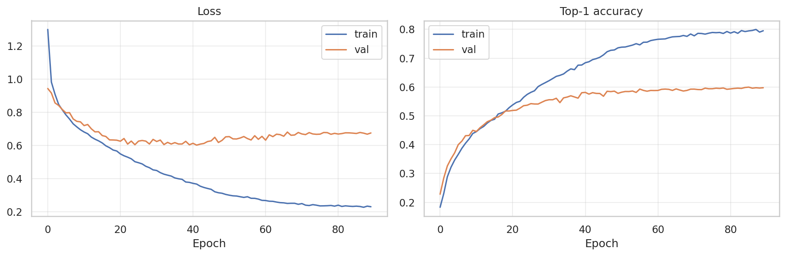
Confusion Matrix
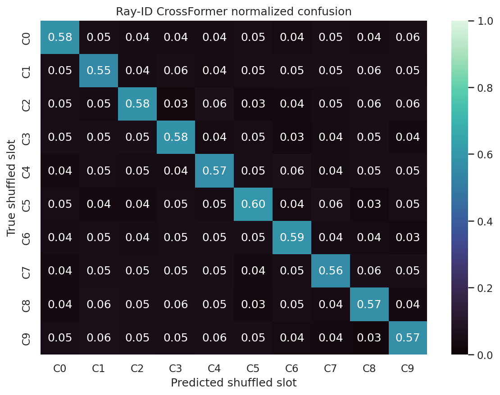
Model Comparison Summary
Model |
Task |
Top-1 |
Top-3 |
Top-5 |
RSRP MAE |
|---|---|---|---|---|---|
Temporal DeepSet (Exp 01) |
Single-step (baseline only) |
99.82 % |
100.0 % |
100.0 % |
— |
SpatioTemporal DeepSet (Exp 02) |
5-step |
56.13 % (avg) |
— |
— |
5.56 dBm |
MTL Transformer (Exp 03) |
5-step |
55.79 % |
86.02 % |
94.99 % |
4.20 dBm |
6G Predictive (Exp 04) |
5-step |
54.93 % |
85.47 % |
94.70 % |
5.23 dBm |
Strategic DeepSet (Exp 05) |
5-step |
51.35 % |
86.68 % |
95.59 % |
4.94 dBm |
Ray FT (Exp 06) |
5-step (ray domain) |
28.12 % |
72.55 % |
98.57 % |
8.11 dBm |
Ray-ID CrossFormer (Exp 07) ★ |
5-step (ray domain) |
57.60 % |
90.87 % |
98.87 % |
— |
Note on Top-3 as Production KPI: In real NR deployments, the network selects from the top-3 candidate cells based on live X2/Xn signaling, QoS constraints, and load balancing. A Top-3 accuracy of 90.87 % means that in 9 out of 10 handover events, the optimal target cell is within the model’s top-3 recommendations — ensuring maximum operational flexibility and near-elimination of blind-handover failures.